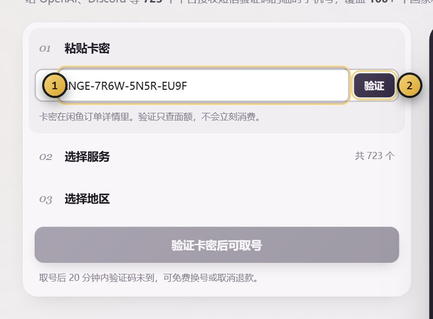
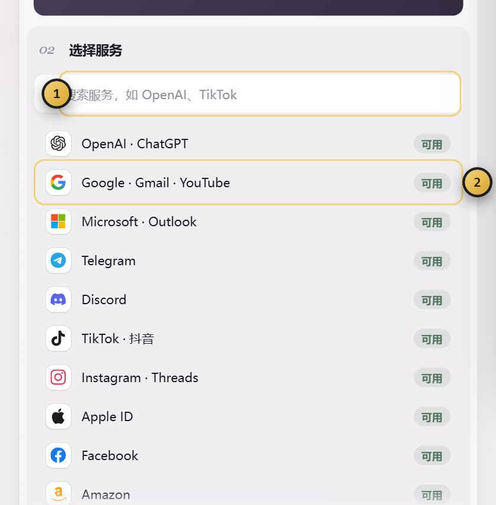
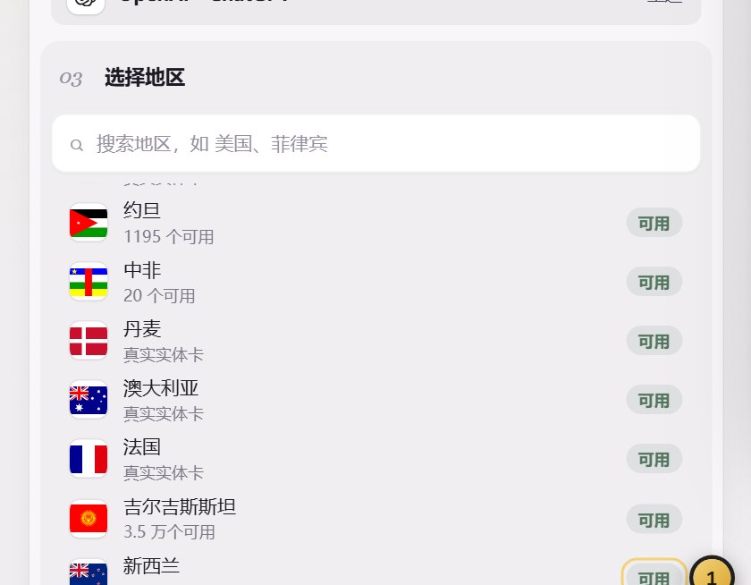
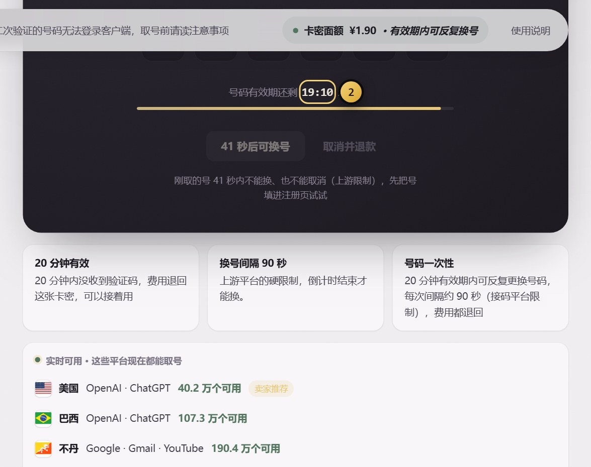
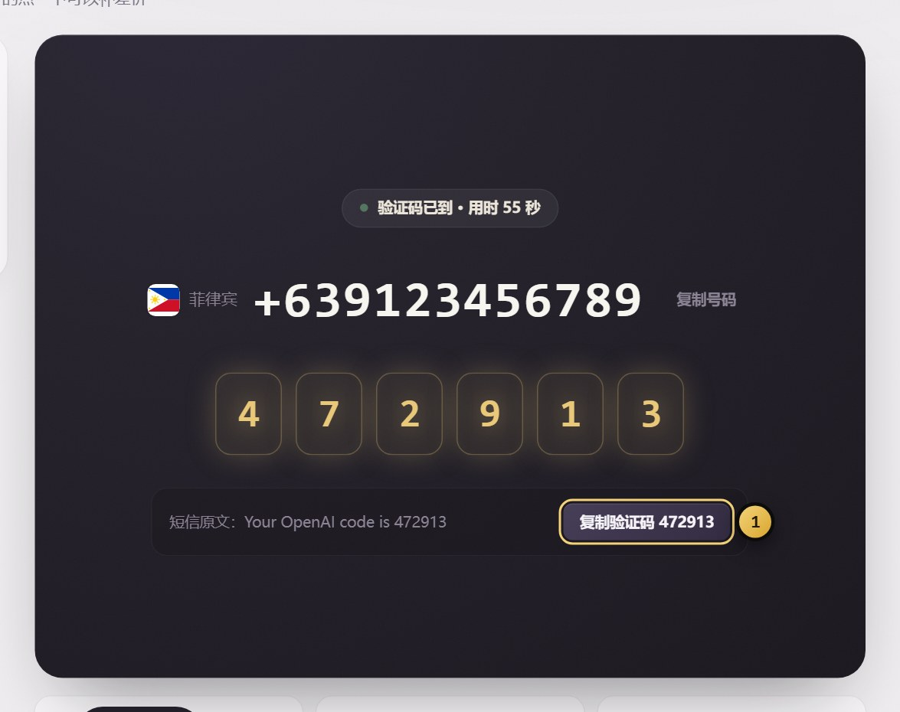
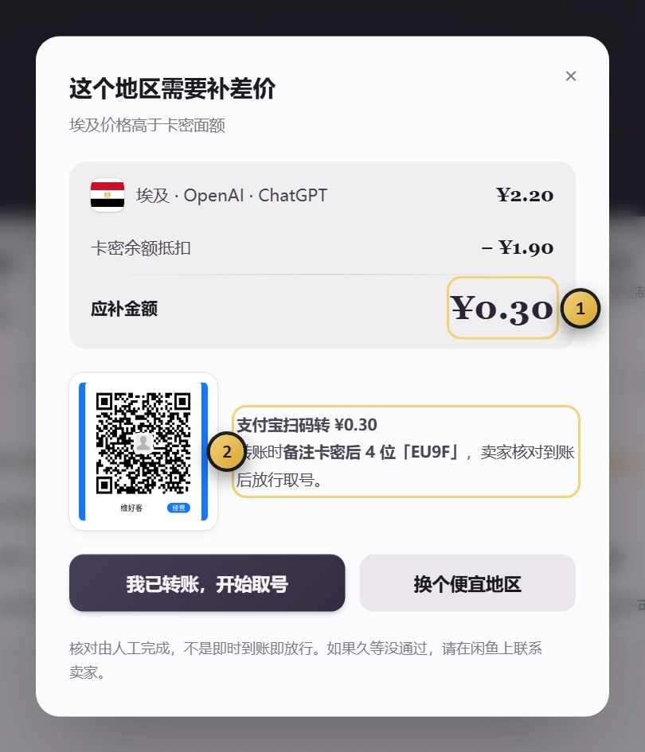
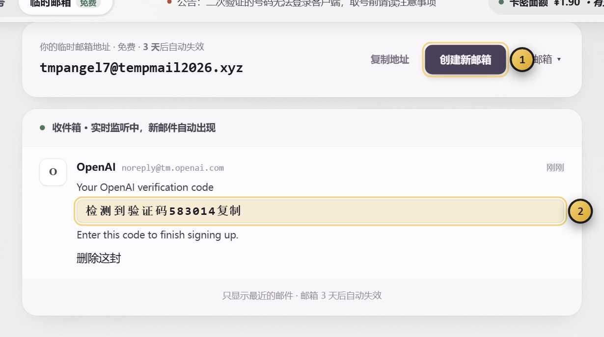

1
粘卡密
下单后卖家会把卡密发给你，长得像 ANGE-XXXX-XXXX-XXXX。粘到页面左上角那个输入框里，点「验证」。
整段消息一起粘也行——页面会自己把卡密那一串认出来，不用你手动挑。全角横杠、多余空格都能识别。

从粘卡密到收到验证码，一共三步。这页把每一步长什么样都截了图，照着做就行。
看不明白的直接翻到最下面「还是搞不定」。
这是境外一次性虚拟号，收完这一条验证码就释放了，无法解绑、也不可能留给你长期使用。
如果你注册的账号之后触发了二次验证（要求再收一次短信），这个号已经找不回来了，届时只能重新取号或换别的方式。Codex / ChatGPT 桌面客户端对二次验证比较敏感，网页端一般不受影响。介意这一点就先别下单，别买完再来退。
全程在一个页面里完成，不用下载任何东西，也不用注册账号。
下单后卖家会把卡密发给你，长得像 ANGE-XXXX-XXXX-XXXX。粘到页面左上角那个输入框里，点「验证」。
整段消息一起粘也行——页面会自己把卡密那一串认出来，不用你手动挑。全角横杠、多余空格都能识别。

先选你要注册哪个平台（ChatGPT、Discord、TikTok…上面有搜索框，打名字就能找到），再选号码是哪个国家的。
每一行右边会标「可用」或「卡密余额不足」，页面不显示价格——卡密是预付的，你只要挑标着「可用」的就行。具体看下一节。


点底部金色的「取手机号」，号码会出现在页面中间。点旁边的「复制号码」，粘到你要注册的那个网站上。
1. 接收方式一定要选「短信 / SMS」。注册页通常会给你几个选项（短信、WhatsApp、语音电话）。 选 WhatsApp 是收不到的——我们给的是普通手机号，不是 WhatsApp 账号。 如果页面自动跳到了语音电话，说明这个国家的号不适合，回来换一个国家。
2. 注册页的国家区号要和号码对上。你取的是泰国号，注册页的国家就要选泰国。 选错了对方会往另一个国家发短信，你这边永远收不到。
然后回到本页面等着就行，页面每 5 秒自动查一次，收到验证码会自动填进中间那六个格子里，不用刷新、不用手动点。切到别的标签页也没关系，浏览器标签标题上会一直显示倒计时。


这是这个页面唯一需要理解的概念，一分钟看完。
你这张卡密直接能取这个号，不用再花一分钱。挑这种就对了。
这个地区的号成本高过你卡密的面额。想用的话要补差价，不想补就换一个标「可用」的地区，收码效果完全一样。
你之前补过这个地区的差价、卖家也核对到账了，现在可以正常取号。
点一下标着「卡密余额不足」的那一行，页面会弹出补差价窗口，上面把三件事都写清楚了：这个地区多少钱、你的卡密能抵多少、你还要补多少。

1. 转账时一定要按提示备注卡密后 4 位。不备注卖家对不上是谁付的钱，只能干等。
2. 这是人工核对，不是即时到账即放行。转完点「我已转账，开始取号」，卖家核对到账后那个地区才会变成「可用」。急的话直接在闲鱼上戳卖家一句。
3. 补款只对这一次取号有效。不是给卡密充值，也不能转到别的地区去用。
说到底：绝大多数人根本用不上补差价。标「可用」的地区通常有几十上百个，随便挑一个都能收码。补差价只是给「非某个特定国家的号不可」的人留的口子。
先别急着关页面，也别急着找卖家吵——这事有标准处理流程，而且不会额外扣你的钱。
正常 1~3 分钟内会到。境外短信偶尔会慢，页面在自动查，你不用做任何操作。
原号码的费用会退回卡密，不额外扣钱。号码有效期内可以反复换，每次之间要隔约 90 秒。
有些国家的号，目标平台就是不给发短信。多换两个国家通常就成了——这比在同一个国家反复试有用得多。
费用同样退回，卡密还能继续用。
注意：刚取的号约 90 秒内既不能换、也不能取消，按钮会先灰着并显示还剩几秒。这是号码线路的硬性限制，不是我们设的卡。等它自己亮起来就行。
左栏下方有「注销卡密并申请退款」。点了之后这张卡密作废（作废后不能再取号），然后回你下单的平台找卖家，把卡密后四位发给他退款。
比如「令牌交换失败」「400 / 401 / 403」「Localhost 拒绝连接」「出错了，请重试」。 先说结论：这类报错跟手机号没有关系。验证码已经收到、手机号已经绑定成功了， 卡在这里的是你和对方网站之间的网络。
1. 换个节点。别用香港节点、也别用「自动选择」，选美国或日本， 家庭宽带类型的节点比机房节点稳。换完退出重新登录一次。
2. 查一下出口 IP 干不干净。很多人用的节点被大量共享过，会被判定成风险 IP。 可以上 ippure.com 这类网站自查一下。
3. 换个浏览器或用无痕窗口。清掉旧的登录状态再来一次。
4. 把报错原文复制去搜。这些都是对方网站的通用报错，搜一下能找到一堆现成方案。
验证码已经送到你手里、手机号已经绑定成功，这一单就算完成了。 之后因为网络、节点、IP、账号本身状态导致的登录失败，不在退款范围内—— 那部分不是我们能控制的，也不是我们卖的东西。
我们负责的边界很清楚：把验证码送到你手里。没送到，退款；送到了，交易结束。
写在明面上，免得事后扯皮。
| 情况 | 能不能退 | 说明 |
|---|---|---|
| 取到号，但没收到验证码 | 能退 | 在有效期内点「更换号码」或「取消并退款」，费用退回卡密，卡密可以继续用。 |
| 换了几次都收不到 | 能退 | 注销卡密后联系卖家，按订单退款。 |
| 已经收到验证码了 | 不能退 | 验证码一到，这次交易就算完成了，换号和退款都会锁上。 |
| 超过有效期没做任何操作 | 不能退 | 号码自动过期释放，这部分成本已经产生。有效期内记得处理。 |
| 收到码了，但登录时报错 令牌交换失败 / 400 / 401 / 403 | 不能退 | 验证码已送达、号码已绑定，这一单就完成了。这类报错是网络和节点问题，见上一节。 |
| 号码收到码了，但账号后来被平台封了 | 不能退 | 我们负责的是「把验证码送到你手里」，账号能不能长期用取决于你注册的那个平台。 |
一张卡密对应一次成功收码。中间换号、取消都不额外扣费，号码有效期内可以反复换。收到验证码之后，这张卡密就用完了。
页面顶部有「临时邮箱」这个标签，免费、不用登录、点一下就有，用来接注册验证邮件正合适。

可以自己挑前缀（系统会自动加 tmp 前缀并去掉符号，最终地址以创建后显示的为准）。邮箱 3 天后自动失效，收到的信一起清掉。只有你本人能读这个邮箱的信，别人拿到地址也读不了。
这是临时邮箱，过期就找不回来了，找回密码、绑定支付这些统统做不了。注册个一次性的东西可以，长期账号请用你自己的邮箱。
不能。一次性虚拟号，收完这一条验证码就释放了，无法解绑也无法长期持有。这类服务都是这个机制，不是我们单独这样。
因为对你没用。卡密是预付的，一张卡对应一次成功收码，你选便宜的地区并不会省钱、选贵的也不会多花钱。你真正需要知道的只有一件事：这张卡能不能取这个号——所以我们直接标「可用 / 卡密余额不足」。
号码线路限制：刚取的号约 90 秒内不能退。按钮会灰着并显示还剩几秒，到点自动亮起来。这 90 秒里你正好可以把号填进注册页面。
先确认没有多复制空格。验证码本身通常只有几分钟有效期，收到就赶紧用。
要注意：一张卡密只收一条验证码，收到之后页面就不再接收了。如果这条码已经过期，需要重新买一张卡密取号。
能。重新打开页面，输入同一张卡密，如果还有进行中的号码会自动接上，倒计时也接着走。卡密已经用完的会提示「已经用过了」。
按号码线路的实时成本换算成人民币。库存和价格本身会浮动，所以同一个地区不同时间点的成本不一样——这也是为什么会出现「今天可用、明天余额不足」的情况。
这两件事都请直接在你下单的平台上联系卖家谈，页面上处理不了。
在你下单的那个平台上找卖家沟通就行。为了让他一次就能查到你的记录，麻烦把这两样一起发过去：
· 卡密后四位（不用发完整卡密）
· 你取到的那个手机号（如果已经取过号）
说清楚卡在哪一步、页面上显示的原话是什么，比说「用不了」有用得多。